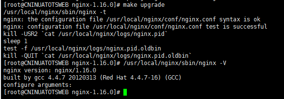

<!DOCTYPE html>
<html>
  <!DOCTYPE html>
<html lang="zh-CN">
<head><meta name="generator" content="Hexo 3.9.0">
  <meta http-equiv="content-type" content="text/html; charset=utf-8">
  <meta http-equiv="X-UA-Compatible" content="IE=Edge,chrome=1">
  
  <title>Nginx升级 - zgshen&#39;s note</title>
  <meta name="viewport" content="width=device-width, initial-scale=1.0, maximum-scale=1.0, user-scalable=0">
  
  <meta name="keywords" content="nginx">
  
  
    <link rel="shortcut icon" type="image/x-icon" href="/favicon.ico?v=1.02">
  
  
    <link rel="alternate" href="/atom.xml " title="zgshen&#39;s note" type="application/atom+xml">
  

  <link rel="stylesheet" href="/css/style.css">
</head></html>
  <body>
    <div class="container">
      <header class="header">
  <div class="blog-title">
    <a href="/" class="logo">zgshen&#39;s note</a>
    <div class="subtitle"></div>
  </div>
  <nav class="navbar">
    <ul class="menu">
      
        <li class="menu-item">
          <a href="/" class="menu-item-link">主页</a>
        </li>
      
        <li class="menu-item">
          <a href="/about" class="menu-item-link">关于</a>
        </li>
      
        <li class="menu-item">
          <a href="https://www.google.com/search?q=site:zguishen.com/" class="menu-item-link">搜索</a>
        </li>
      
    </ul>
  </nav>
</header>
<article class="post">
  <div class="post-title">
    <h1 class="article-title">Nginx升级</h1>
  </div>
   <div class="post-meta">
    <span class="post-time">2019-08-06</span>
  </div>
  <div class="post-content">
    <p>内网的nginx扫出几个漏洞，要求隐藏版本号，解决整型溢出问题，建议升级修补一下。<br><a id="more"></a><br>先 sudo su 用root权限，查看当前版本，再备份</p>
<figure class="highlight plain"><table><tr><td class="gutter"><pre><span class="line">1</span><br><span class="line">2</span><br><span class="line">3</span><br><span class="line">4</span><br></pre></td><td class="code"><pre><span class="line">[root@CNINUATOTSWEB nginx-1.16.0]# /usr/local/nginx/sbin/nginx -V</span><br><span class="line">nginx version: nginx/1.10.1</span><br><span class="line">built by gcc 4.4.7 20120313 (Red Hat 4.4.7-16) (GCC)</span><br><span class="line">configure arguments:</span><br></pre></td></tr></table></figure>
<p></p>
<p>解压新版本</p>
<p>tar -zxvf nginx-1.16.0.tar.gz</p>
<p>配置参数（configure arguments后面的参数，没有不填）</p>
<p><code>./configure</code><br></p>
<p>make 编译（完成之后切记别 make install）<br></p>
<p>备份旧版本（最重要的 conf文件 记得备份到本地）</p>
<p>mv /usr/local/nginx/sbin/nginx /usr/local/nginx/sbin/nginx.old</p>
<p>复制 objs 下新版到 sbin 目录</p>
<p>cp objs/nginx /usr/local/nginx/sbin/<br></p>
<p>最后执行 make upgrade 替换老的nginx进程<br></p>
<p>再执行 nginx -V 查看是否成功<br></p>
<p>隐藏版本号，编辑 nginx.conf, http 下加上<code>server_tokens off;</code><br><figure class="highlight plain"><table><tr><td class="gutter"><pre><span class="line">1</span><br><span class="line">2</span><br><span class="line">3</span><br><span class="line">4</span><br><span class="line">5</span><br><span class="line">6</span><br><span class="line">7</span><br><span class="line">8</span><br><span class="line">9</span><br><span class="line">10</span><br><span class="line">11</span><br><span class="line">12</span><br></pre></td><td class="code"><pre><span class="line">http &#123;</span><br><span class="line">    include       mime.types;</span><br><span class="line">    default_type  application/octet-stream;</span><br><span class="line">    server_tokens off;</span><br><span class="line"></span><br><span class="line">    #log_format  main  &apos;$remote_addr - $remote_user [$time_local] &quot;$request&quot; &apos;</span><br><span class="line">    #                  &apos;$status $body_bytes_sent &quot;$http_referer&quot; &apos;</span><br><span class="line">    #                  &apos;&quot;$http_user_agent&quot; &quot;$http_x_forwarded_for&quot;&apos;;</span><br><span class="line">.</span><br><span class="line">.</span><br><span class="line">.</span><br><span class="line">#以下略</span><br></pre></td></tr></table></figure></p>

  </div>
  <div class="post-footer">
    
      <ul class="post-tag-list"><li class="post-tag-list-item"><a class="post-tag-list-link" href="/tags/nginx/">nginx</a></li></ul>
    

    <a href="#top" class="top">返回顶部</a>
  </div>
</article>
<footer>
  &copy; 2021
  <span class="author">
    zguishen
  </span>
</footer>
    </div>
	<script async src="https://www.googletagmanager.com/gtag/js?id=GA_MEASUREMENT_ID"></script>
	<script>
	  window.dataLayer = window.dataLayer || [];
	  function gtag(){dataLayer.push(arguments);}
	  gtag('js', new Date());
	  gtag('config', 'UA-106347761-1');
	</script>
  </body>
</html>